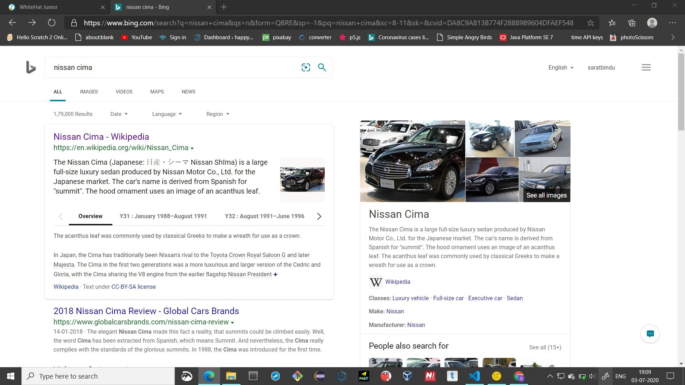

The Nissan Cima (Japanese: 日産・シーマ Nissan Shīma) is a large full-size luxury sedan produced by Nissan Motor Co., Ltd. for the Japanese market.
The car's name is derived from Spanish for "summit". The hood ornament uses an image of an acanthus leaf.
The acanthus leaf was commonly used by classical Greeks to make a wreath for use as a crown.
